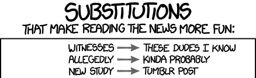

Algorithmique du texte

Source image : https://xkcd.com/1288/
1 Algorithme de Rabin-Karp
1.1 Principe
L’algorithme de Rabin-Karp est un algorithme de recherche d’un motif dans un texte qui utilise une notion d’empreinte pour déterminer, en temps constant, si il est probable que la position actuelle corresponde à une occurrence du motif.
Pour cela, si on cherche un motif de longueur \(p\) sur l’alphabet \(\Sigma\), on considère une fonction de hachage \(h : \Sigma^p \rightarrow X\). Les éléments de l’ensemble \(X\) sont appelés des empreintes et on suppose que l’égalité entre deux empreintes se vérifie en temps constant contrairement à l’égalité dans \(\Sigma^p\) qui se vérifie en \(O(p)\) dans le pire des cas. Le plus souvent, on choisit pour \(X\) un type entier machine.
Bien qu’il soit normalement aussi coûteux de calculer l’image par \(h\) d’une sous-chaîne de longueur \(p\) que de tester l’égalité entre cette sous-chaîne et le motif, le point essentiel de l’algorithme de Rabin-Karp est d’utiliser une fonction de hachage permettant un calcul incrémental en temps constant :

Ici, on considère donc, pour \(a, b \in \Sigma\), une fonction de mise à jour \(\delta_{a,b} : X \rightarrow X\) telle que pour tout \(c_2,\dots,c_p \in \Sigma\) on ait \(\delta_{a,b}(h(ac_2 \dots c_p)) = h(c_2\dots c_p b)\).
L’algorithme de Rabin-Karp procède alors ainsi pour chercher \(m\) de longueur \(p\) dans la chaîne \(s = c_0 \dots c_{n-1}\) où \(n \ge p\) :
calcul de \(e_m = h(m)\) et \(e = h(c_0..c_{p-1})\).
Pour \(i\) allant de \(0\) à \(n-p\) :
- Si \(e_m = e\), on renvoie un succès pour la recherche à la position \(i\) si \(m = c_i \dots c_{i+p-1}\)
- si \(i<n-p\) on met à jour l’empreinte \(e \leftarrow \delta_{c_i,c_{i+p}}(e)\).
La complexité temporelle liée à la gestion des empreintes est donc en \(O(n+p) = O(n)\) car \(n \ge p\). Par contre, pour calculer la complexité liée à la recherche \(m = c_i \dots c_{i+p-1}\), il est nécessaire d’estimer la proportion de faux positifs, c’est-à-dire de positions \(i\) telles que \(e_m = e\) mais \(m \neq c_i \dots c_{i+p-1}\). On va voir dans la partie suivante qu’on peut supposer qu’elle est négligeable, ce qui permet de considérer que l’algorithme de Rabin-Karp est linéaire.
1.2 Choix d’une fonction de hachage
Réaliser une bonne fonction de hachage est une question très complexe qui dépasse le cadre du cours d’informatique de MPI. Cependant, il est possible de réaliser ici une fonction de hachage répondant aux contraintes de Rabin-Karp assez facilement.
Pour cela, on considère que les caractères sont des entiers compris entre 0 et 255, ce qui correspond au type des caractères non signés sur un octet. On peut alors identifier une chaîne de longueur \(p\) avec un nombre entre \(0\) et \(r^{p} - 1\) où \(r =2^8\), on note ainsi \[ P(c_0\dots c_{p-1}) = \sum_{i=0}^{p-1} c_i r^{p-1-i} = c_0 r^{p-1} + c_1 r^{p-2} + \dots + c_{p-1} \]
On considère de plus un entier premier \(q\) et on pose \(h(s) = P(s) \mod q\) c’est-à-dire le reste de \(P(s)\) dans la division euclidienne par \(q\). On peut ainsi définir \(\delta_{a,b}(e) = (r (e - a r^{p-1}) + b) \mod q\).
Si on précalcule \(r^{p-1} \mod q\) il suffit d’un nombre d’opération constant, et indépendant de \(p\), pour calculer la nouvelle empreinte à l’aide de \(\delta_{a,b}\).
Le point essentiel est alors de déterminer un nombre premier \(q\) tel qu’il soit peu probable d’obtenir des faux positifs. Une analyse mathématique permet d’affirmer que chaque élément de \([|0;q-1|]\) a de l’ordre de \(\frac{r^p}{q}\) antécédents par \(h\). Ainsi, si on choisit deux chaînes aléatoirement dans \(\Sigma^p\), il y aura collision avec probabilité proche de \(\frac{1}{q}\). En considérant \(q\) proche de la taille maximale pour le type entier considéré, on minimise donc cette probabilité.
Le programme suivant implémente naïvement les calculs de \(h\) et de \(\delta_{a,b}\) :
let hash r q s =
let p = ref 1 in
let e = ref 0 in
for i = String.length s - 1 downto 0 do
e := (!p * (Char.code s.[i]) + !e) mod q;
p := (r * !p) mod q
done;
!e
let delta r q rp a b e = (* rp est r^(p-1) mod q *)
(r * (e - rp * (Char.code a)) + Char.code b) mod qint64_t hash(int64_t r, int64_t q, char *s, int n)
{
int64_t p = 1;
int64_t e = 0;
for (int i = n-1; i >= 0; i--)
{
e = (p * s[i] + e) % q;
p = (r * p) % q;
}
return e;
}
int64_t delta(int64_t r, int64_t q, int64_t rp,
char a, char b, int64_t e)
{
return (r * (e - rp * a) + b) % q;
}def hash(r,q,s):
e = 0
p = 1
for c in reversed(s):
e = (ord(c) * p + e) % q
p = (r * p) % q
return e
def delta(r,q,rp,a,b,e):
return (r * (e - rp * ord(a)) + ord(b)) % q1.3 Implémentation
Une implémentation directe de l’algorithme de Rabin-Karp est donnée dans le programme qui suit. On se sert ici du caractère paresseux du && pour n’effecuter le test coûteux d’égalité des chaînes qu’en cas d’égalité des empreintes.
exception Trouve of int
let rabin_karp m s =
let n = String.length s in
let p = String.length m in
let r = 256 in
let q = 0x7fffffff in (* 2^(31)-1 *)
let rp = pow r (p-1) q in
let me = hash r q m in
let e = ref (hash r q (String.sub s 0 p)) in
try
for i = 0 to n-p+1 do
if me = !e && m = String.sub s i p
then raise (Trouve i);
if i+p < n then e := delta r q rp s.[i] s.[i+p] !e
done; None
with Trouve k -> Some kint rabin_karp(char *m, char *s)
{
const int64_t r = 256;
const int64_t q = 0x7fffffff;
const int p = strlen(m);
const int n = strlen(s);
const int64_t rp = powmod(r,p-1,q);
const int64_t me = hash(r,q,m,p);
int64_t e = hash(r,q,s,p);
for (int i=0; i <n-p+1; i++)
{
if (me == e && strncmp(m,(s+i),p) == 0)
return i;
if (i+p < n)
e = delta(r,q,rp,s[i],s[i+p],e);
}
return -1;
}def rabin_karp(m, s):
p, n = len(m), len(s)
r, q = 256, 0x7fffffff
rp = (r ** (p-1)) % q
me, e = hash(r,q,m), hash(r,q,s[:p])
for i in range(0,n-p+2):
if me == e and m == s[i:i+p]:
return i
if i+p < n:
e = delta(r,q,rp,s[i],s[i+p],e)
return NoneSi on suppose qu’il est improbable d’obtenir un faux positif, il est possible de renvoyer un succès dès que les empreintes sont égales. L’avantage d’une telle version est alors d’être un algorithme sans retour sur les données. C’est-à-dire qu’il n’est pas nécessaire de garder en mémoire ou de réaccéder à un caractère.
1.4 L’algorithme originel de Rabin et Karp
Si on regarde l’article originel de Rabin et Karp décrivant cette méthode, on peut être étonné du fait que la méthode précédemment décrite était considérée comme déjà connue dans la littérature par les auteurs. En fait, ce qu’ils décrivent et annoncent comme étant novateur est l’utilisation d’un algorithme probabiliste en choisissant aléatoirement une fonction de hachage à chaque lancement de l’algorithme. En pratique, il s’agit de choisir aléatoirement un nombre premier \(q\) parmi un ensemble précalculé de nombres premiers.
L’algorithme que l’on vient de décrire a un pire cas qui est très improbable car on considère que la probabilité d’un faux positif est à peu près de \(1/q\), donc moins de \(5.10^{-10}\) pour \(q = 2^{31}-1\). Le problème ici est la notion de probabilité sur les entrées : est-on certain que l’algorithme recevra une entrée choisie uniformément ? Rabin et Karp parlent d’un adversaire intelligent qui aurait connaissance de la fonction de hachage choisie pour produire des entrées en pire cas. On pourrait ainsi imaginer une attaque sur serveur effectuant une recherche avec Rabin-Karp suite à l’entrée d’un utilisateur. Un adversaire pourrait construire une entrée en pire cas et tenter de surcharger le serveur en l’effectuant de manière répétée.
Pour bien mettre en lumière ce phénomène, nous allons ici construire, dans un cas très simple de fonction de hachage, une telle chaîne problématique. Pour cela, considérons la fonction de hachage précédemment décrite dans le cas de motif de taille 2, avec \(\Sigma\) contenant les lettres de a à z, \(r = 26\) et \(q = 17\). On considère une recherche du motif aa dont l’empreinte est 0, la même que celle des chaînes ar et ra. On peut donc considérer la chaîne arar...ar qui produira un faux positif à chaque étape.